Examples
Black lines show STL walls, red lines show rotating-zone interfaces (faceZones), and gray lines show cell faces. Cell counts and runtimes were measured with the Rust extension on a 16-core machine (v0.5.0, including quality checks). Click any image to open it at full size.
Choose “With layers” above a figure to see the same configuration with three layers on all walls
("addLayers": { "nLayers": 3, "expansionRatio": 1.2, "finalLayerThickness": 0.3 }).
The cell count, runtime, and quality metrics switch to the layered mesh. “Target thickness” gives the percentage of wall vertices where the layers reached their target thickness.
Stirred tank (examples/stirred_tank)
A flat-bottomed tank 300 mm in diameter and 300 mm tall contains a 100 mm diameter impeller with 4 paddle blades, each 6 mm thick, and a shaft that reaches the lid.
Generate the STL with python make_geometry.py. The solids are tankWall, bottom, top, impeller, and shaft.
Rotating zone (meshDict.json)
- 102,429 cells
- 1.0 s
- Cartesian grid with a cylindrical rotating zone
A cylindrical rotating zone with a radius of 70 mm surrounds the blades. The octree is cut against the cylinder, so the interface (red) follows the cylinder surface even in coarse cells. Refinement is concentrated on the blades (level 3), shaft (level 2), and rotating-zone interior (level 2). The tank wall stays at level 1.
Run the case
cd examples/stirred_tank
python make_geometry.py # Generate tank.stl and rotor.stl (also in the repository)
cutmesh meshDict.json # → case/constant/polyMesh、case/constant/MRFPropertiesCommon options and inspection tools
cutmesh meshDict.json -case case_test # Change the output directory (overrides "case")
cutmesh meshDict.json -noCheck # Skip the final quality check (about 10% faster for large meshes)
python run.py meshDict.json # Generate the mesh and plot slice_z.png and slice_y.png
python ../../benchmark/render_mesh.py case -o case_pictures # Render overview.png and cut.png
python -m cutmesh.diagnose meshDict.json case # Check for leaks through walls
python ../../tools/edge_check.py meshDict.json # Measure how well the mesh captures edges and rimsUse a sliding mesh (AMI)
cutmesh meshDict_ami.json # Split the interface into cyclicAMI patches rotor_AMI1 and rotor_AMI2,
# and write constant/dynamicMeshDict → case_ami/
python -m cutmesh.ami case -out case_ami_later # Convert an existing mesh
# For openfoam.org, set "openfoam": "org12" in meshDict and run this command in OpenFOAM:
# createNonConformalCouples -overwrite rotor_nonCouple1 rotor_nonCouple2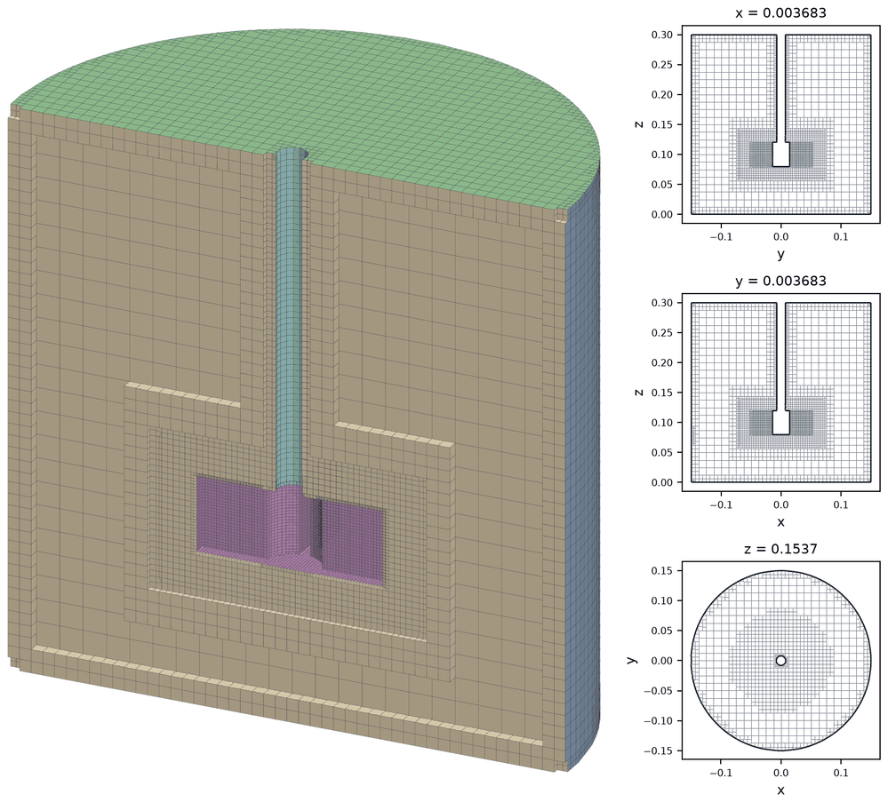

meshDict_layers.json, 163,629 cells, 2.6 s, target thickness at 97.7%)

meshDict_layers.json)
meshDict.json
{
"domain": "tank.stl",
"baseCellSize": 0.0125,
"surfaceRefinement": { "default": 1, "impeller": 3, "shaft": 2 },
"featureLevel": 2,
"bufferLayers": 2,
"snapTolerance": 0.3,
"mergeRatio": 0.25,
"rotatingZones": [
{
"name": "rotor",
"cylinder": { "point1": [0, 0, 0.06], "point2": [0, 0, 0.14], "radius": 0.07 },
"surfaceLevel": 2,
"volumeLevel": 2,
"omega": 31.416
}
],
"patchTypes": { "top": "wall" },
"case": "case"
}Cylindrical base mesh (meshDict_cylindrical.json)
- 137,144 cells
- 6.0 s
- Concentric blocks in the base mesh
The octree roots are concentric blocks around the axis. The automatic layout uses a central 2×2 square and outward concentric rings. The square is inside the hub, so nearly all fluid cells align circumferentially, following the rotating-zone interface and tank wall. Block faces are overlaid to create a conforming mesh even when the division counts are not integer multiples.
Run the case
cd examples/stirred_tank
cutmesh meshDict_cylindrical.json # → case_cylindrical/
python run.py meshDict_cylindrical.json # Also plot the cross-sections

baseMesh settings
"baseMesh": {
"type": "cylindrical",
"origin": [0, 0, 0],
"axis": [0, 0, 1],
"nz": 24
}The log shows a central 2×2 square (11.9 mm half-width), ring radii of 23.8 / 34.8 / 58.4 / 91.8 / 158.3 mm, and 8 / 16 / 24 / 36 / 64 circumferential divisions. The blade tips (50.1 mm), rotating zone (70 mm), and tank wall (150 mm) sit at the 1/3 position in the radial cells.
Boundary layers (meshDict_layers.json)
- 163,629 cells
- 2.6 s
- 3 layers on all walls
This variant of the rotating-zone example adds 3 prismatic layers to every wall patch. Where the layers meet the rotating-zone interface, their side faces still follow the cylinder surface.
Run the case
cd examples/stirred_tank
cutmesh meshDict_layers.json # Add layers after meshing → case_layers/Add layers to an existing mesh
cutmesh meshDict.json # Mesh without layers → case/
python -m cutmesh.layers case meshDict_layers.json -out case_layers_later
# Use "addLayers" from the second argument (default: 3 layers if omitted)
# -out sets the output path (omission overwrites the input mesh)
# -noCheck skips the quality check. -ascii and -binary override the input format.
addLayers settings
"addLayers": { "nLayers": 3, "expansionRatio": 1.2, "finalLayerThickness": 0.3 }Rotor–stator interface in a narrow gap
- 596,154 cells
- 7.3 s
- 1 mm gap
A stationary ring (stator) sits just outside the stirred tank blades. Its inner surface is 1 mm from the blade-tip corners.
The rotating-zone interface sits halfway across the gap, 0.5 mm from the blades. To fit cells between the interface and both walls,
wallProximity refines the interface near the walls and autoGapRefinement refines the walls facing the gap.
Generate the STL with python make_geometry.py --stator 1. The ring's inner surface is solid statorInner and the other surfaces are stator.
Run the case
cd examples/stirred_tank
python make_geometry.py --stator 1 # Generate tank_stator_1mm.stl (--stator takes the gap width in mm)
cutmesh meshDict_stator_1mm.json # → case_stator_1mm/ (about 600,000 cells, 10 s, 1.1 GB of memory)
python -m cutmesh.diagnose meshDict_stator_1mm.json case_stator_1mm # Check for connections through the gap wallsUse a 0.5 mm gap
python make_geometry.py --stator 0.5 # tank_stator_0.5mm.stl
cutmesh meshDict_stator.json # About 2 million cells (about 30 s, 3.5 GB of memory)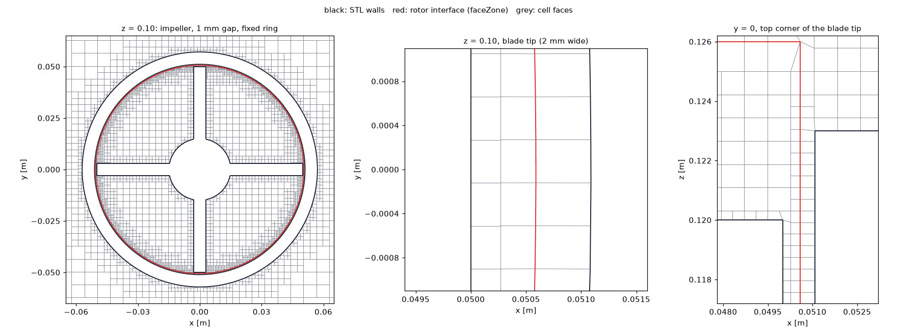
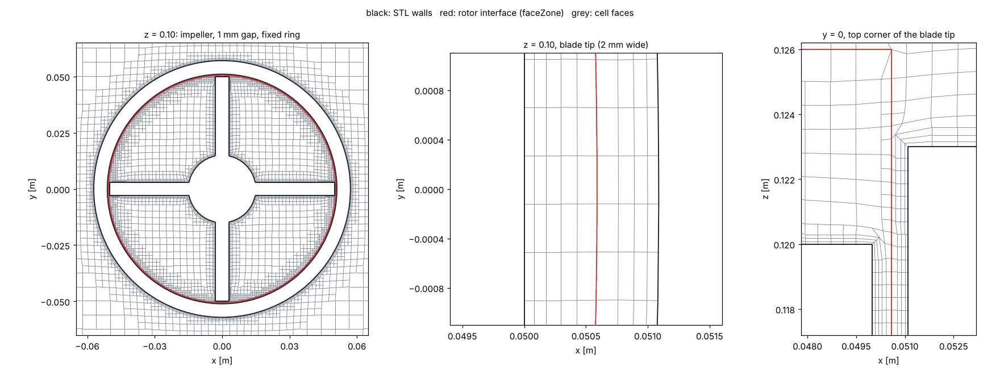
Cell counts rise sharply as the gap narrows. Fitting at least 1 cell between the interface and the wall requires cells roughly half a gap wide around the entire interface.
This geometry uses about 600,000 cells at 1 mm and about 2 million cells at 0.5 mm (about 3.5 GB of memory).
With MRF, "conforming": false selects the rotating zone by cell centers, removing the need for interface refinement. AMI requires conforming zones.
meshDict_stator_1mm.json
{
"domain": "tank_stator_1mm.stl",
"baseCellSize": 0.0125,
"surfaceRefinement": { "default": 1, "impeller": 3, "shaft": 2, "stator": 3, "statorInner": 3 },
"featureLevel": 2,
"bufferLayers": 2,
"snapTolerance": 0.3,
"mergeRatio": 0.25,
"autoGapRefinement": { "cellsAcross": 2, "maxLevel": 5 },
"rotatingZones": [
{
"name": "rotor",
"cylinder": { "point1": [0, 0, 0.074], "point2": [0, 0, 0.126], "radius": 0.05059 },
"surfaceLevel": 3,
"volumeLevel": 2,
"wallProximity": { "distance": 0.001, "level": 5 },
"omega": 31.416
}
],
"patchTypes": { "top": "wall" },
"case": "case_stator_1mm"
}The 0.5 mm gap settings are in examples/stirred_tank/meshDict_stator.json, with maxLevel and level set to 6.
Shape tests (benchmark/)
These are 5 synthetic benchmark shapes generated with python benchmark/make_synthetic.py. Each uses a base cell size of 1/24 of the longest bounding-box edge
and surface refinement to level 2. Every figure shows a 3D view with the front half of the cells removed and 3 central sections.
Run from the repository root
python benchmark/make_synthetic.py # Generate synthetic STLs in benchmark/data/synthetic/
python benchmark/run_bench.py benchmark/suites/synthetic.json --only sphere --only torus --keep --out benchmark/results/shapes
# --only filters by case name (supports wildcards, e.g. "thin_*"). --keep preserves passing meshes.
# --out sets the output directory. benchmark/results/shapes/cases/sphere/ contains case/constant/polyMesh,
# meshDict.json (settings), overview.png and cut.png (images), and log.txt (cutmesh log).
# benchmark/results/shapes/summary.md lists the results, cell counts, quality, and runtimes.Other options
python benchmark/run_bench.py benchmark/suites/synthetic.json -j 4 # Run all 26 shapes, 4 at a time
python benchmark/run_bench.py benchmark/suites/synthetic.json --cells-across 48 --only cube_rotated # Double the resolution
python benchmark/run_bench.py benchmark/suites/synthetic.json --set addLayers='{"nLayers": 3}' # Add layers to every case
python benchmark/run_bench.py benchmark/suites/synthetic.json --baseline benchmark/baselines/synthetic.json # Compare with the baseline
python benchmark/stl_check.py benchmark/data/synthetic/torus.stl # Inspect the STL for open edges and other issues


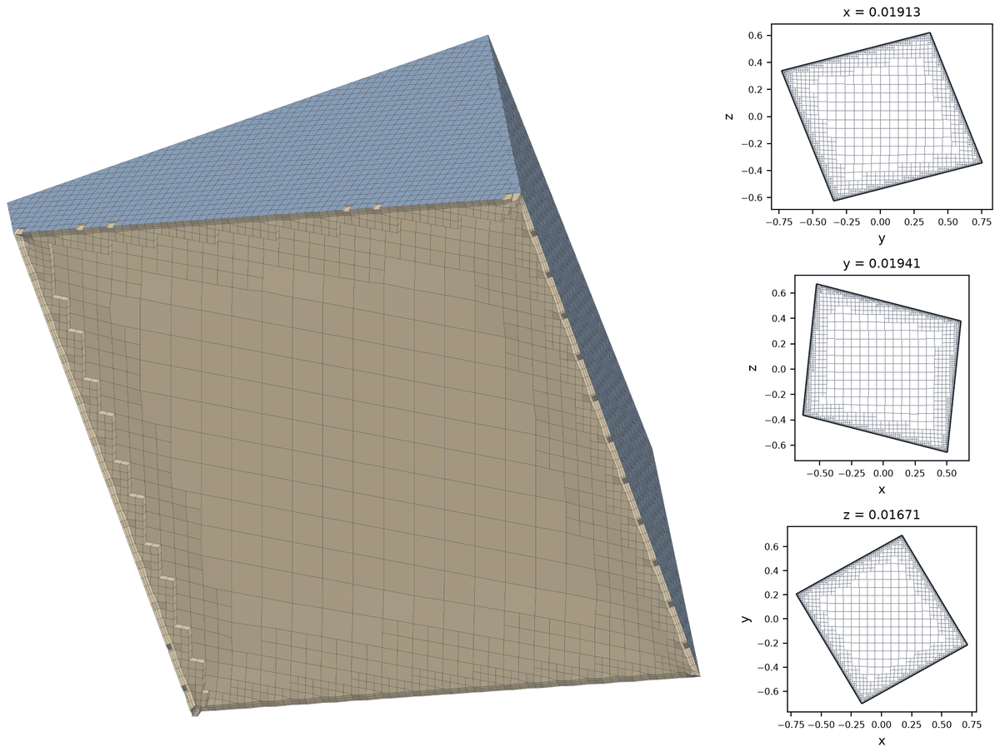


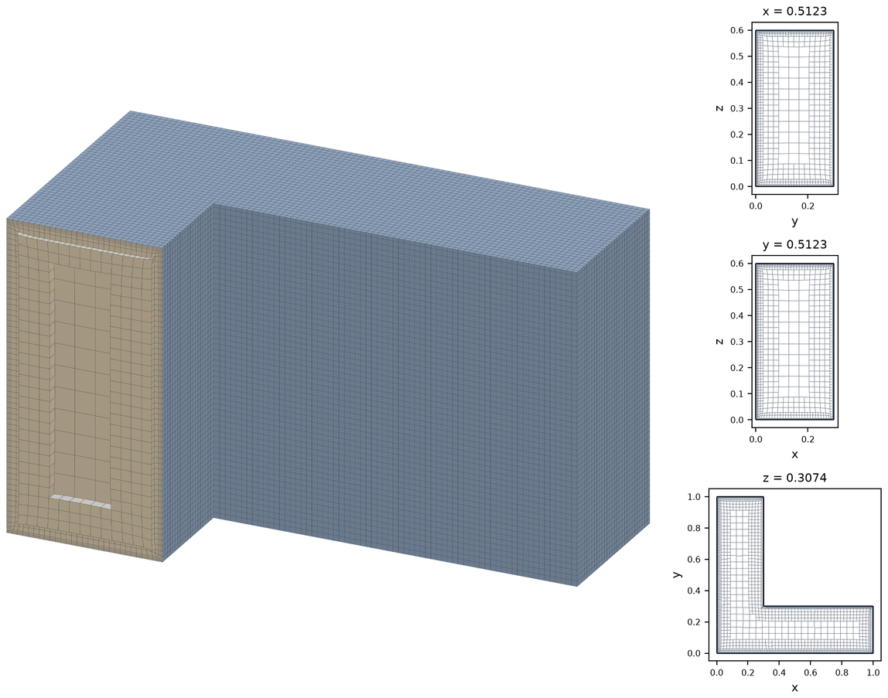
Off-grid edges (exact cuts for convex edges)
When an edge does not align with the octree grid, nearby vertices can snap to either wall, leaving a sawtooth edge where the fluid between the vertices and the edge is lost cell by cell.
The exactFeatureCut option, enabled by default, cuts cells near convex edges directly with STL planes
so the mesh follows the edge. The images show the cube_rotated walls from 2 directions.

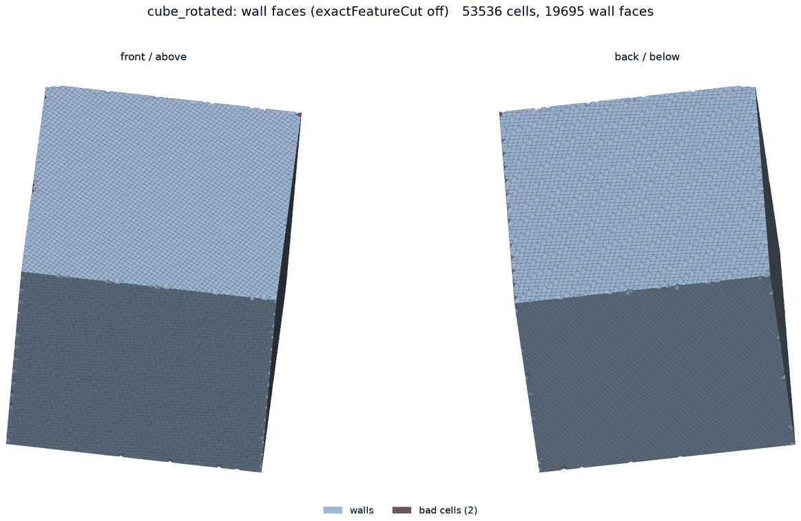

Where convex edges meet concave edges or curved surfaces, cutmesh falls back to the standard cut if planar cuts would create invalid cells. Some chamfering can remain there. Edges between curved and planar surfaces, such as the rim of a cone base, are outside the scope of exact cuts.
The full suite tracks failures, warnings, and quality regressions across 26 shapes, including thin walls and STLs with duplicate triangles, open edges, or mixed orientations. See benchmark/README.md.
Showcase geometries (benchmark/suites/showcase.json)
These 8 geometries represent pipe, duct, and external flow problems. Each STL has separate inlet and outlet solids (patches).
Generate them with python benchmark/make_synthetic.py. All 8 cases PASS without warnings or quality flags.
There are 0 faces above 70° non-orthogonality or 4 skewness, and volume error is within 0.3% of the STL volume. In the sections, black lines show STL walls and gray lines show cell faces.
Run from the repository root
python benchmark/make_synthetic.py # Generate STLs such as pipe_elbow.stl in benchmark/data/synthetic/
python benchmark/run_bench.py benchmark/suites/showcase.json -j 4 --keep --out benchmark/results/showcase
# → benchmark/results/showcase/cases/<name>/case/constant/polyMesh and meshDict.json (settings)
python benchmark/run_bench.py benchmark/suites/showcase.json --only venturi --keep # Run just one caseFind each case's meshDict settings, including baseCellSize, per-patch refinement, and patchTypes,
in benchmark/suites/showcase.json. To run cutmesh directly, pass the generated meshDict.json
to cutmesh meshDict.json.

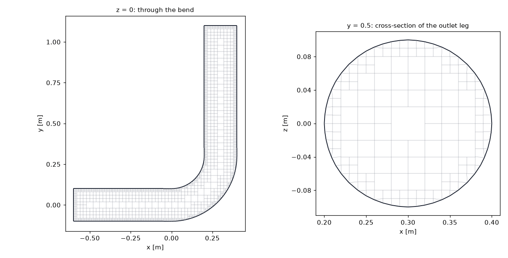


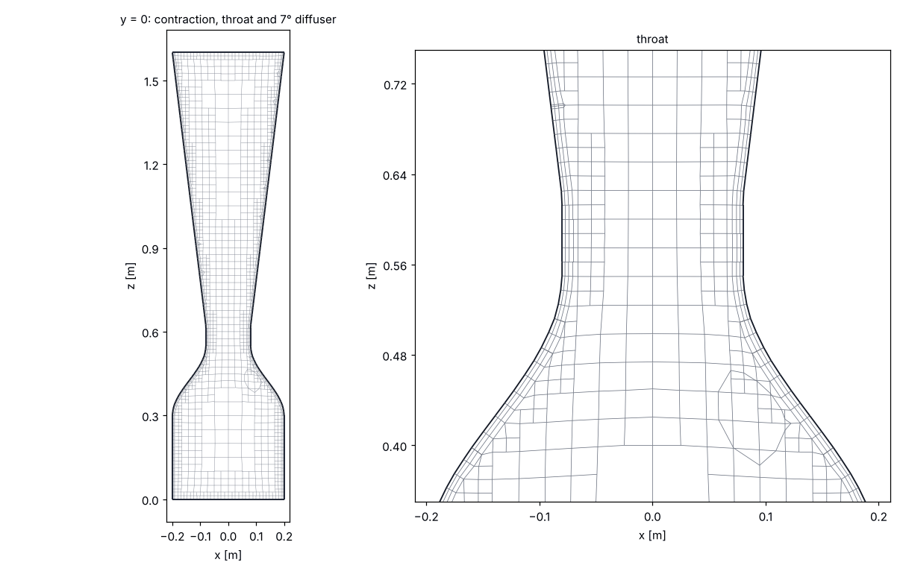


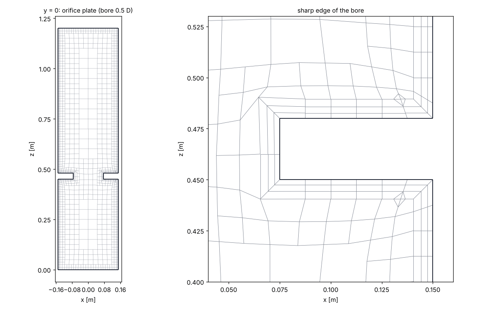


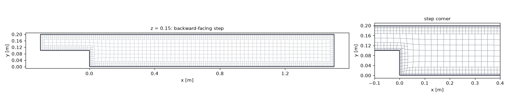
symmetry patches. (19,440 cells, 0.3 s, max non-orthogonality 25°with layers, 40,752 cells, 0.6 s, target thickness at 100.0%、max non-orthogonality 40°)

inletMain and inletBranch. (15,736 cells, 0.3 s, max non-orthogonality 25°with layers, 38,392 cells, 0.6 s, target thickness at 100.0%、max non-orthogonality 62°)

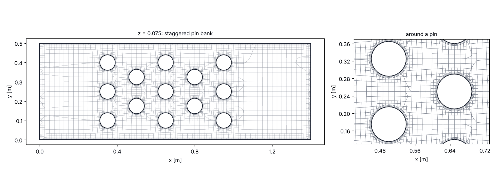


Example meshDict for body_in_tunnel
{
"domain": "body_in_tunnel.stl",
"baseCellSize": 0.08,
"surfaceRefinement": { "default": 0, "floor": 1, "body": 4 },
"patchTypes": { "inlet": "patch", "outlet": "patch", "walls": "symmetry" },
"case": "case"
}The solids are inlet, outlet, floor, walls (wind-tunnel sides and ceiling), and body (normals point into the body, out of the fluid).
Reproducing the images
Use the commands below to regenerate the images. With the Rust extension, both variants together take about 2 minutes.
python tools/make_docs_images.py # All images → docs/images/
python tools/make_docs_images.py --only stator # Selected cases (tank, cylindrical, stator, shapes, showcase)
python tools/make_docs_images.py --variant plain # Without layers (use layers for files ending in _layers)For your own mesh, run python benchmark/render_mesh.py CASE for 3D views and sections, or see
cutmesh.viz.plot_slice in examples/stirred_tank/run.py for sections only.